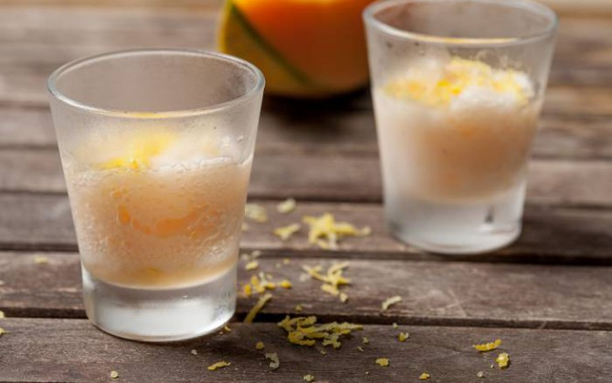
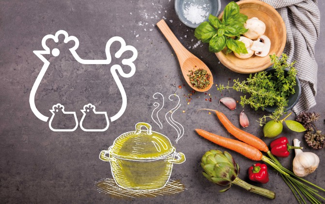
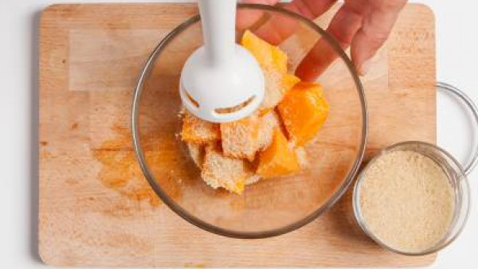
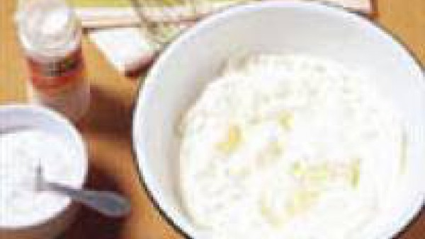

Sorbete de Melón:
- 1 melon maduro
- 1 cucharada de azúcar moreno
- 1 limón
- Quita la piel y las semillas del melón y córtalo en trozos. Exprime el jugo del limón y rallar la piel.
- Introduce en un bol los trozos del melón, añade el azúcar moreno, la ralladura de limón y un poco de jugo del mismo y tritúralo todo. Déjalo en el congelador durante aproximadamente 1 hora.
- Después de 1 hora, sácalo del congelador y mezcla con una cuchara añadiendo más ralladura de limón. Así la mezcla quedará más espumosa. A continuación, resérvalo en el congelador. Repite esto por lo menos 3 veces más.

Dulce de Melón
- 2 melones tipo cantalup
- 110 g azúcar
- 1 lima
- 200 ml. nata
- 30 g azúcar glasé
- 1 cucharadita azúcar avainillado
- Partir el melón y quitar las semillas. Sacar bolitas de pulpa con la ayuda de una cuchara.
- Poner en un cazo las bolitas de fruta, el azúcar y cuatro cucharadas de agua y el zumo de lima. Dejar cocer a fuego medio-bajo durante 10 minutos con el cazo tapado. Dejar enfriar y refrigerar.
- Montar la nata junto con los dos azúcares. Formar una corona de nata y poner en el centro el dulce de melón

Compota de Melón
- 750 gr Melón
- 300 gr Azúcar
- 2 palos medianos Canela en rama
- 1 limón Ralladura de limón
- 1 bote Nata montada
- Hacer la compota , poniendo en una olla el melón cortado en trozos y previamente pelado , con el azúcar , la canela y la ralladura de limón , a fuego lento ,el melón irá soltando su jugo si no es así , se añade un chorrito de agua , y se sube a medio fuego durante 30 ó 40 minutos
- Se aparta del fuego ,se deja enfriar y se sirve en copitas con la nata